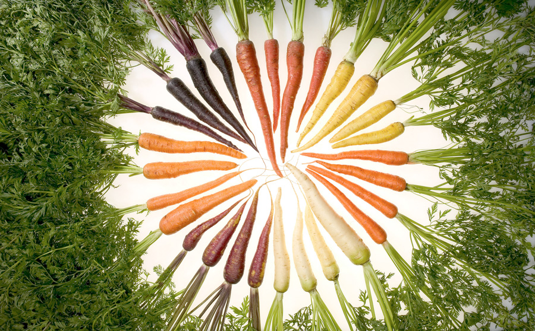

Daucus carota
La carota (Daucus carota L., 1753) è una pianta erbacea dal fusto di colore verde appartenente alla famiglia delle Apiaceae; è anche uno dei più comuni ortaggi; il suo nome deriva dal greco Karotón. La carota spontanea è diffusa in Europa, in Asia e nel Nord Africa. Ne esistono molte e diverse cultivar che sono coltivate in tutte le aree temperate del globo.
Allo stato spontaneo è considerata pianta infestante e si trova facilmente in posti assolati ed in zone aride e sassose ma anche in tutti gli ambienti rurali e perfino alle periferie cittadine.

Descrizione
È una specie erbacea biennale, alta fino a 100 cm, che nel secondo anno sviluppa un fusto eretto e ramificato con foglie verdi profondamente divise e pelose. Ha grandi ombrelle di forma globulare composte da ombrellette. Queste sono a loro volta formate da fiori piccoli bianchi a cinque petali; il fiore centrale è rosso scuro. L'infiorescenza presenta grandi brattee giallastre simili alle foglie.
Nei fiori sono presenti delle piccole ghiandole profumate che attirano gli insetti. Le infiorescenze dopo la fecondazione dei fiori si chiudono a nido d'uccello. Fiorisce in primavera da maggio fino a dicembre inoltrato. I frutti sono dei diacheni irti di aculei che aiutano la disseminazione da parte degli animali. La radice è lunga a fittone di colore giallastro, a forma cilindrica, lunga 18–20 cm con diametro intorno ai 2 cm. Nel gergo comune si è soliti riferirsi alla carota come alla parte edibile, di colore arancione, che è la radice.

Uso
La carota è coltivata per il fittone radicale di colore bianco nelle varietà da foraggio ed arancio nelle varietà da ortaggio (cristalli di caroteni nei cromoplasti delle cellule parenchimatiche). La carota è ricca di vitamina A (Betacarotene), B, C, PP, D e E, nonché di sali minerali e zuccheri semplici come il glucosio. Per questo motivo il suo consumo favorisce un aumento delle difese dell'organismo contro le malattie infettive.
Ricette
Le carote si possono cucinare in vari modi, sia grattugiate con il succo di limone per contrastare la dolcezza della carota con la sua acidità. Sia si possono cucinare al vapore. Vengono talvolta usate per accompagnare il soffritto con il sedano e le cipolle. Inoltre molto famose sono le torte di carote, spesso mescolando le mandorle.